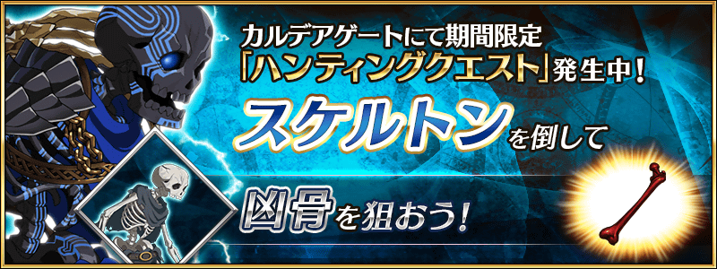
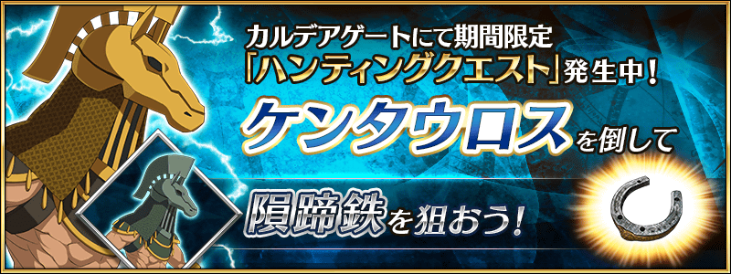
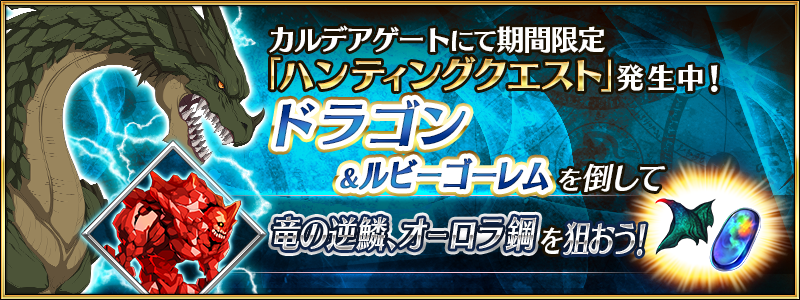

容易取得特定的技能強化＆靈基再臨素材的關卡「狩獵關卡」！
舉辦期間中，特定的敵人做為對象的狩獵關卡依序在迦勒底之門出現。
關卡有準備3階段難易度，在各自的期間內皆能無數次挑戰。
另外，在初次通過時可獲得魔力稜鏡做為關卡通過報酬。
挑戰關卡以獲得技能強化＆靈基再臨素材做為目標吧！
◆舉辦期間◆
2019年5月29日(三) 17:00～6月5日(三) 11:59
◆參加條件◆
所有的御主對象
※新御主必須推進通過至「特異點F 炎上汙染都市 冬木 第3節」。
5月29日(三) 17:00～5月30日(四) 17:59

5月30日(四) 17:00～5月31日(五) 17:59
5月31日(五) 17:00～6月1日(六) 17:59

6月1日(六) 17:00～6月2日(日) 17:59
6月2日(日) 17:00～6月3日(一) 17:59

6月3日(一) 17:00～6月5日(三) 11:59

在5月29日(三)的維修後反映的更新內容之中，介紹代表性的內容。
◆追加時間◆
2019年5月29日(三) 17:00～
修改為能一口氣提高寶具等級
在從者的寶具強化時變得可選擇多張強化素材的卡，一次全部強化好寶具。

※開發中畫面。
公告視窗的自動顯示時機修改
在遊戲登入時修改為只限有新公告才會自動顯示公告視窗。
Android裝置中對應與Google帳號的連動
在Android裝置對應使用Google帳號的遊戲資料自動備份。因此，就算未發行引繼碼的情況也可進行遊戲資料的復原。
※想使用本功能的話在裝置的「資料的備份」必須設定為「ON」。
※關於iOS裝置，有對應使用iCloud及iTunes備份遊戲資料。與Android裝置同様地就算未發行引繼碼的情況也能進行遊戲資料的復原。
※關於Android裝置，Android 6.0以後為本功能的對象。還有，請注意無法自比製作備份資料更舊版的Android裝備復原備份資料。
※引繼碼與透過iCloud或iTunes、Google帳號備份遊戲資料的二者同時存在的情況，由於引繼碼較優先，透過引繼碼復原資料後，備份的遊戲資料會變得無法使用，請在復原的裝置再次進行備份資料的製作。
包含上述。透過何種情況讓引繼碼及備份資料的哪個都無法使用的情況，請自下述的諮詢表格做諮詢。